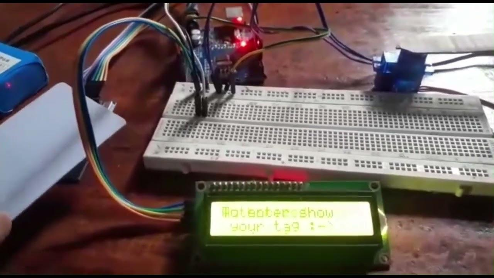
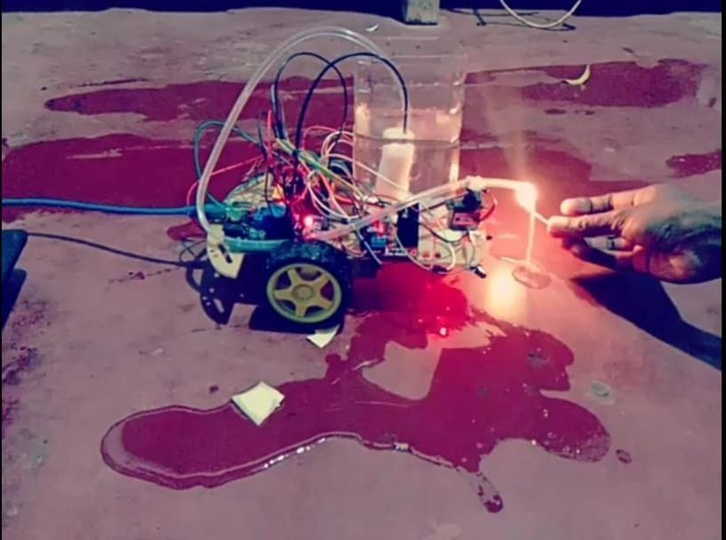
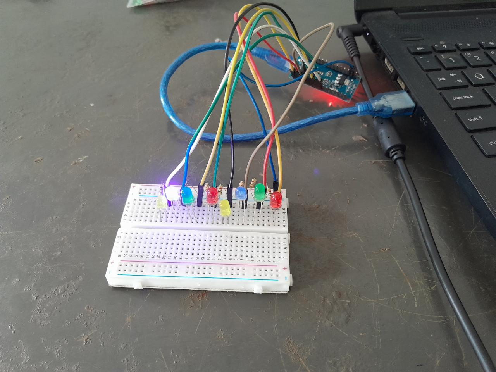
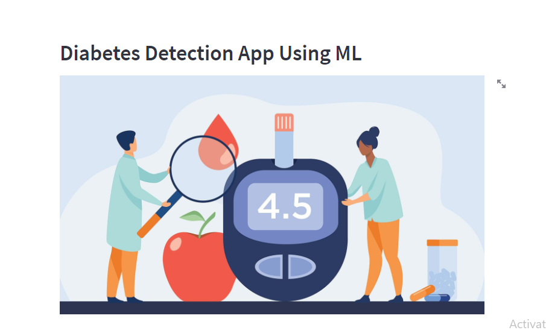
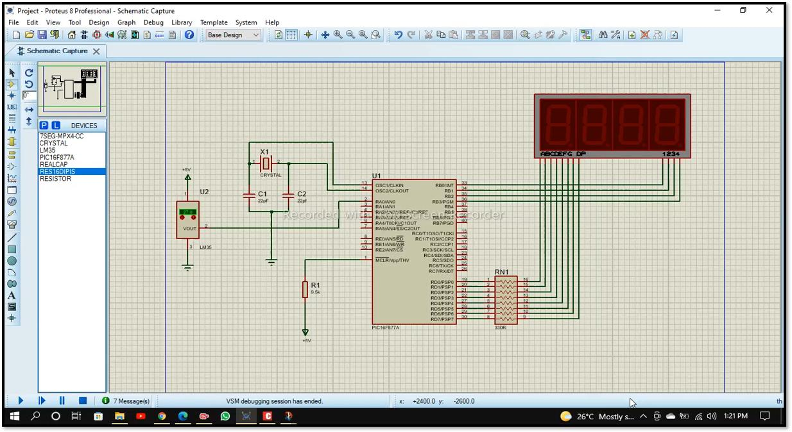
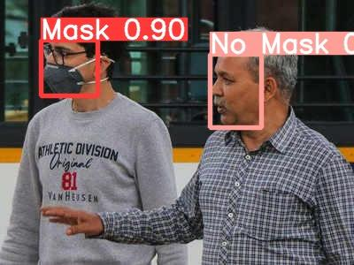

Projects
----------

RFID-Based Smart Door Lock System Using Arduino
An RFID-based smart door lock system was developed using an RFID module, Arduino UNO, servo motor, and LCD display. The system provides access only when an authorized RFID card is detected, providing an electronic access-control mechanism.
Skills: Arduino, C, RFID, Servo Motor, LCD

Arduino-Based Fire Fighting Robot
A fire-fighting robot was developed using a flame sensor, DC motors, water pump, servo-controlled nozzle, and Arduino. The robot detects fire and controls its movement and water-dispensing mechanism to extinguish the detected flame.
Skills: Arduino, C, Robotics, Embedded Systems

ATM System Using C++
A menu-driven ATM system was developed using C++. The application provides account management features including account details, deposits, withdrawals, balance checking, and account information. The project demonstrates object-oriented programming and basic banking transactions.
Skills: C++

Arduino Knight Rider Project
An Arduino-based scanning LED effect was developed, inspired by the Knight Rider lighting pattern. LEDs move back and forth to create a continuous scanning effect while demonstrating Arduino programming and basic electronic concepts.
Skills: Arduino, Arduino IDE

Diabetes Detection Data Science App with Streamlit
A machine learning-based diabetes detection application was developed using Streamlit. Users provide relevant input values through an interactive interface, and a pretrained machine learning model is used to predict diabetes risk.
Skills: Streamlit, Python, Data Science, Machine Learning

Digital Thermometer using LM35 and PIC Microcontroller
A digital thermometer was developed using an LM35 temperature sensor and PIC microcontroller. Temperature values were displayed using a 7-segment display, and the complete circuit was simulated using Proteus.
Skills: Embedded Systems, C++, PIC Microcontroller, Proteus

Mechanical Bench Vise - Engineering Design
An engineering design project focused on developing a rigid, flexible, strong, cost-effective, and durable mechanical bench vise. The design was developed using SolidWorks, with CNC rapid prototyping considered as a manufacturing approach.
Skills: SolidWorks, 3D Design, CAD

Real-Time Face Mask Detection using YOLOv5
A real-time object detection system was developed using YOLOv5 to identify whether individuals are wearing face masks. The system processes images and video streams and applies deep learning and computer vision techniques for real-time monitoring.
Skills: YOLOv5, CNN, Deep Learning, Computer Vision